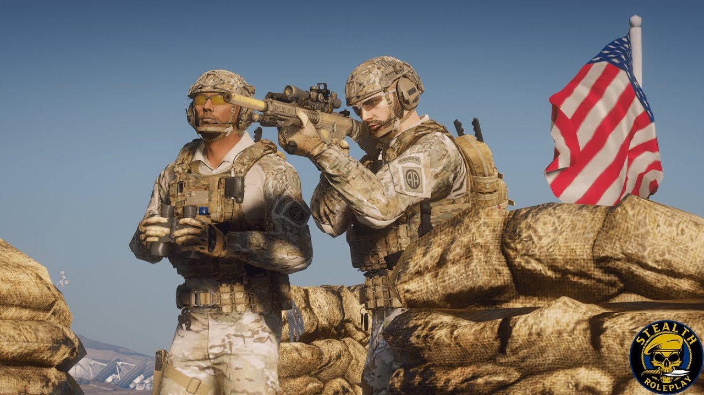
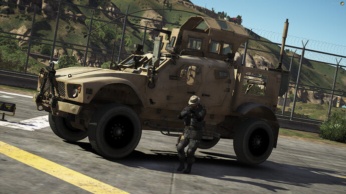
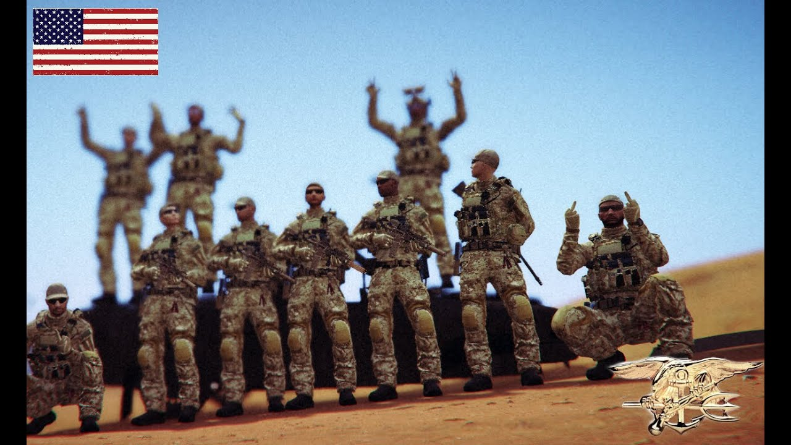

Operation
Northern Resolve
A legrealisztikusabb magyar katonai szimuláció FiveM-en. Valódi hierarchia, kiképzés, bevetések és bajtársiasság. Itt nem játékos vagy — katona.
Magyar katonai
milsim közösség
Az O.N.R 2023 óta működő, szigorúan szervezett katonai roleplay közösség FiveM platformon. Tagjaink között veteránok, milsim rajongók és kezdő újoncok egyaránt találhatóak.
A célunk egy hiteles, immerzív katonai környezet, ahol a döntéseidnek súlya van, a bajtársaidban megbízhatsz és a küldetés a legfontosabb.
Amit az O.N.R kínál
Nem egy egyszerű roleplay szerver. Egy katonai szervezet, ahol a fegyelem, a kiképzés és a bajtársiasság minden egyes bevetésen megmutatkozik.
Hiteles fegyverzet
Egyedi balansz, realisztikus visszarúgás, kalibervisszahúzódás, sérüléslokalizáció.
Alakulati rendszer
Szakaszok, rajok, parancsnoki lánc. Mindenki tudja a helyét és a feladatát.
TFAR rádiózás
TaskForceRadio integráció, frekvenciák, titkosítás és háttércsatornák.
Heti missziók
Felderítés, eskort, mentés, behatolás. Minden hét egy új hadszíntér.
Logisztika és LARP
Üzemanyag, lőszer, javítás, ellátmány. A háború adminisztráció is.
Előléptetés érdemért
Nem az időért — a teljesítményért. Kitüntetések, szolgálati pontok.

Egy konvoj. Egy küldetés.
Minden bevetés tervezésen, briefingen és valós időben irányított végrehajtáson alapul. A káosz a tét — a fegyelem a fegyver.

Jelentkezz egy frakcióba
Válaszd ki, melyik ország katonaságát képviseled. Minden frakció saját parancsnoki láncot, felszerelést és doktrínát használ — a Discordon jelölheted a választásodat a toborzás során.
Készen állsz bevonulni?
Négy lépés. Egy hét. És része vagy az egyik legkomolyabb magyar milsim közösségnek.
Discord belépés
Csatlakozz a hivatalos szerverhez és olvasd el a szabályokat.
Toborzó interjú
Rövid beszélgetés a toborzótiszttel — ki vagy, mit keresel.
Alapkiképzés
Mozgás, kommunikáció, fegyverhasználat. Két este, két óra.
Első bevetés
Élesben az egységgel. Üdvözlünk az O.N.R-nél.
Briefing letöltése
Csatlakozz a Discordhoz és nyisd meg a #toborzás csatornát.
Discord meghívó